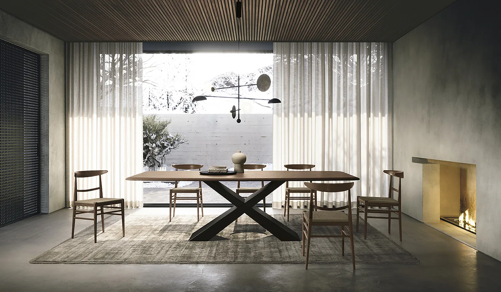
Tables fabriquées en Italie
Sedit
Une industrie à l’âme artisanale.
- Fabriquées en Italie
- Céramique ou bois
- Tables fixes ou à rallonge
- Chaises et tabourets
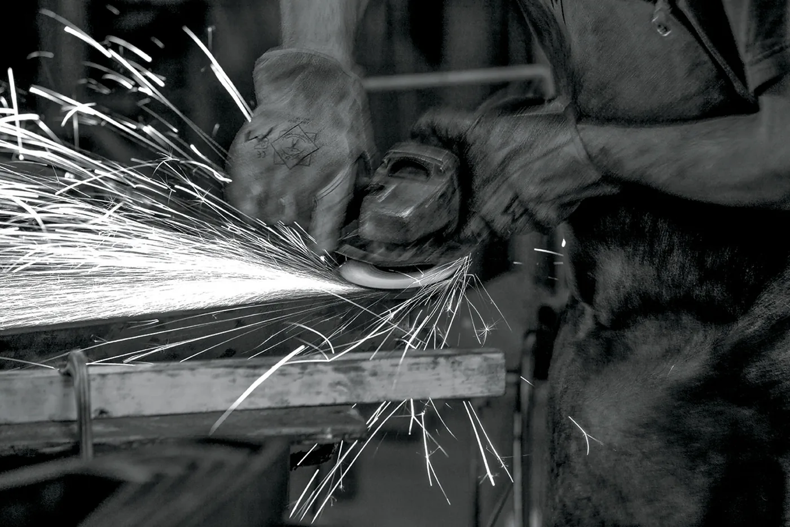
À l’atelier
La matière prend forme.
Photo Sedit.
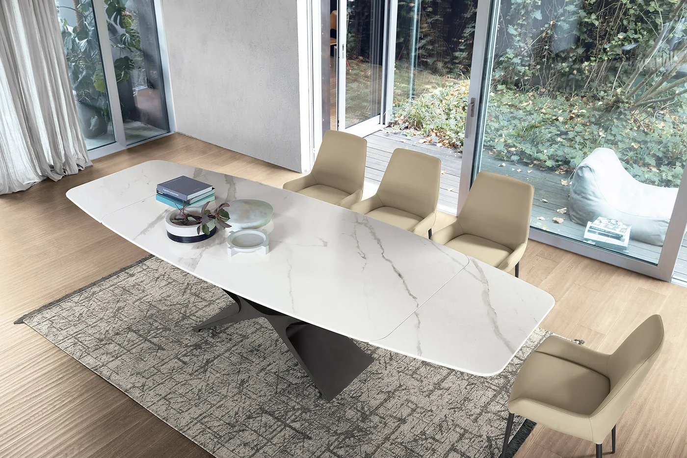
Le plateau
Céramique ou bois.
Photo Sedit.
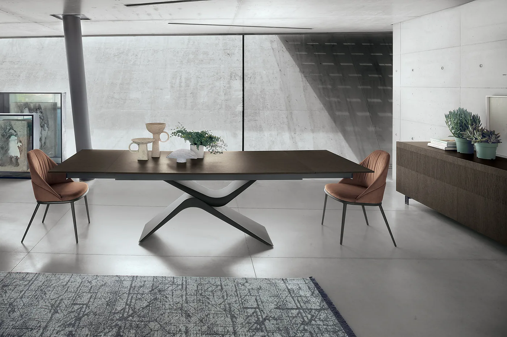
Le pied
Il dessine la table.
Photo Sedit.
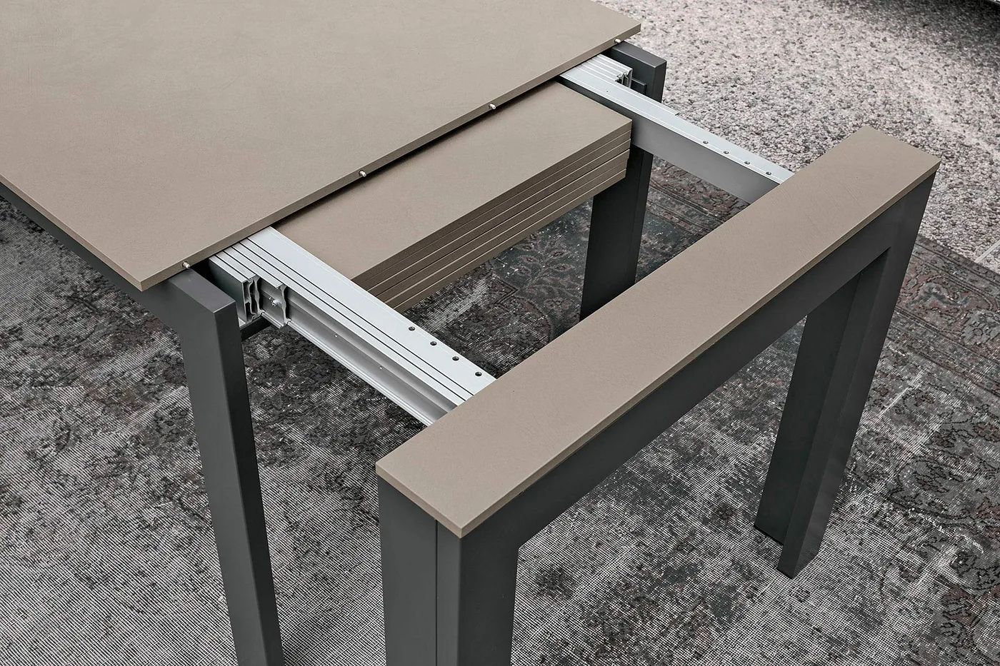
Quand on est nombreux
Quelle longueur les jours de fête ?
Prenez une table rectangulaire de 180 × 100 cm. Sur une version Sedit, deux rallonges de 45 cm portent sa longueur à 270 cm. Tracez les deux extrémités au sol avant de choisir. La porte du buffet s’ouvre-t-elle encore quand une chaise est occupée en bout de table ?
Comparer les rallonges AkantePhoto Sedit.
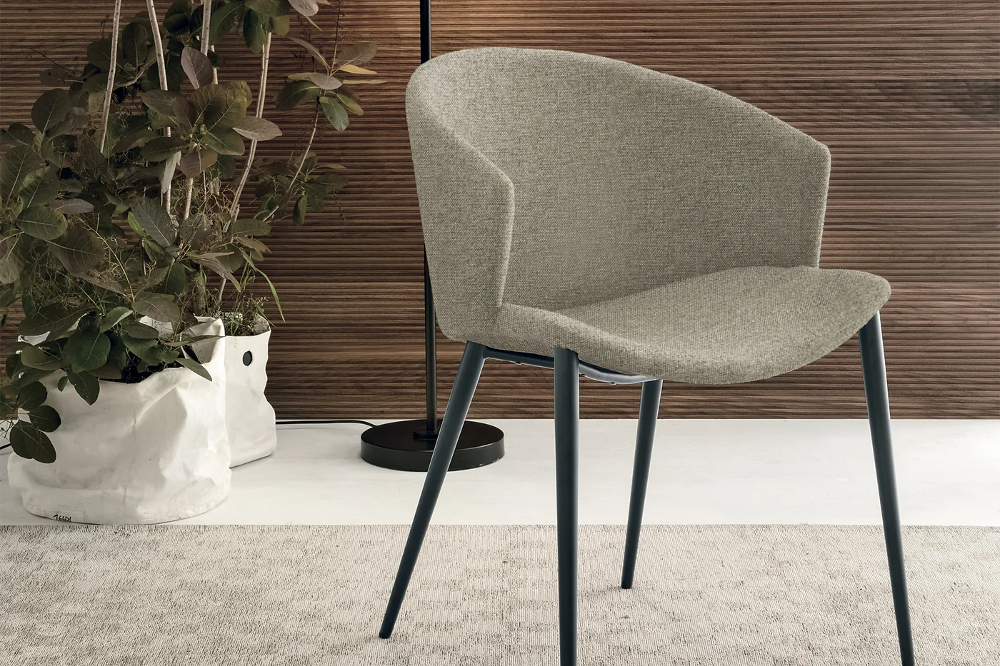
Autour de la table
Et les chaises.
Photo Sedit.
Ambiances
Chacune son caractère.
-
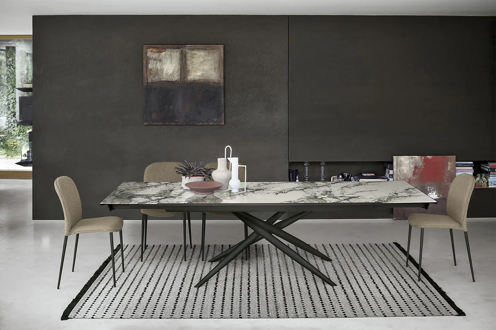
Plateau marbré et lignes fines
-
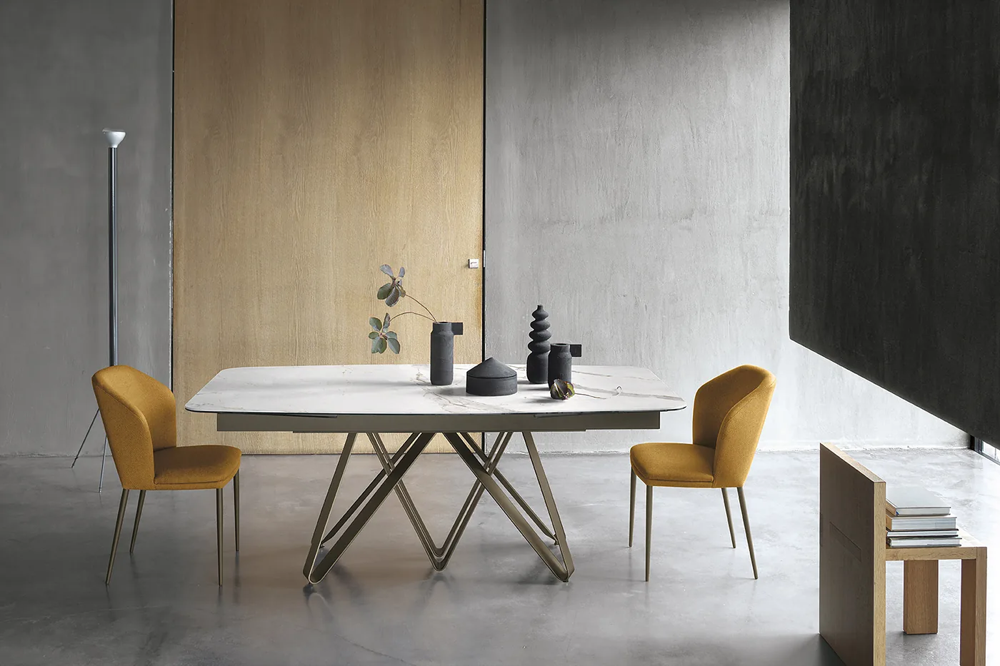
Une touche d’ocre
-
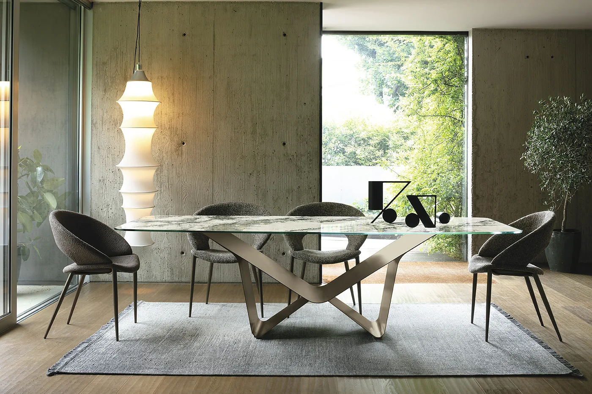
Le verre, face au jardin
-
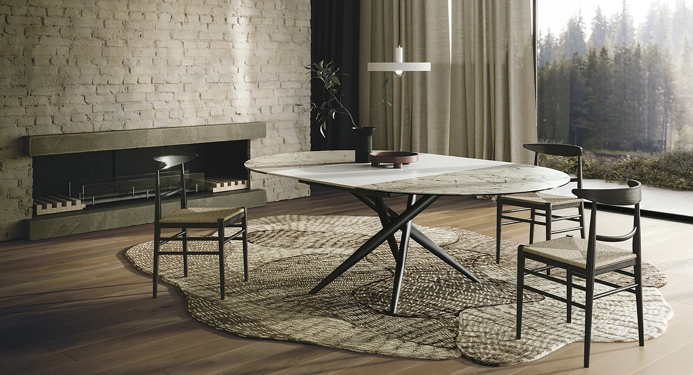
Ronde, près du feu
Venez voir nos tables au magasin.
Dimensions, plateaux et couleurs du pied se choisissent avec nous, au magasin ou sur catalogue.
Partager cette page
- Lundi
- 13h30 – 18h30
- Mardi au samedi
- 10h30 – 18h30
- Dimanche
- Fermé
- Téléphone
- 064 46 07 72
- Livraison
- Par nos soins, dans le Hainaut (Binche, La Louvière, Mons, Charleroi…) et la province de Namur
Nous livrons aussi dans le nord de la France. Ailleurs, dont Bruxelles : sur demande.
Données techniques · Les modèles Sedit
Au magasin et sur catalogue
Les tables Sedit.
-

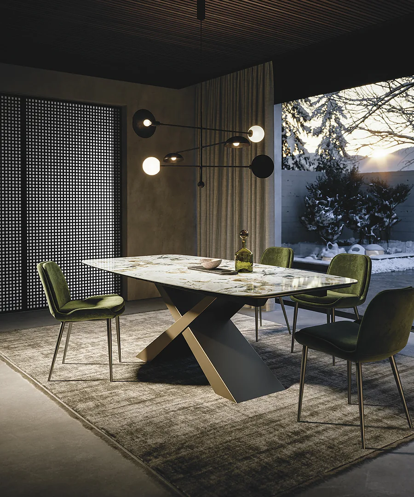
 01
01Plateau en céramique marbrée, piètement croisé doré.
-
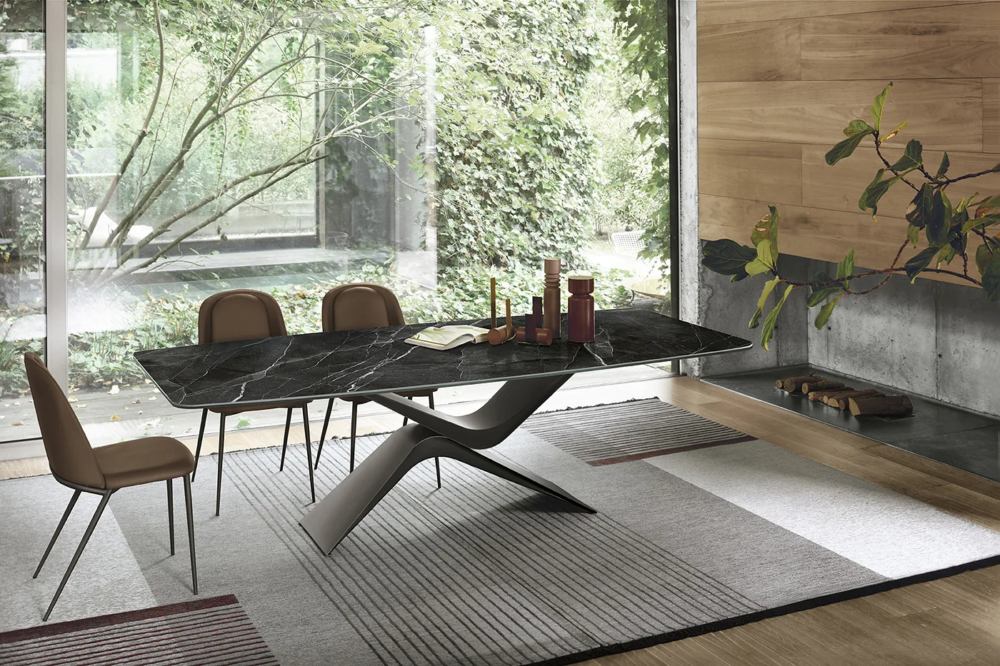
 02
02Un pied en arc, plateau en céramique ou en bois.


Voir aussi
Les autres tables.
-
Cattelan Italia
Des tables en céramique au design affirmé.
Voir les tables Cattelan -
Akante
Des rallonges qui s’ouvrent en un geste.
Voir les tables Akante -
Perfecta
Des tables à composer, avec leurs chaises.
Voir les tables Perfecta -
Capodarte
Tables, chaises et décoration, d’une marque italienne.
Voir Capodarte -
Toutes nos tables
Et les chaises qui vont avec.
Voir la salle à manger
Conseils
Pour aller plus loin.
-
Quelle taille de table pour 4, 6 ou 8 personnes ?
Les repères à prendre chez vous, avant de venir.
Lire le guide